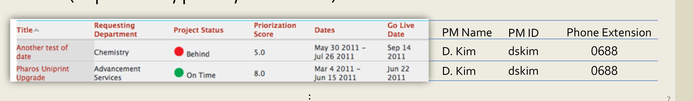
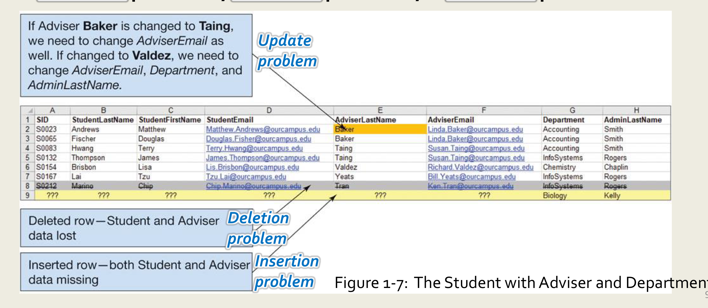
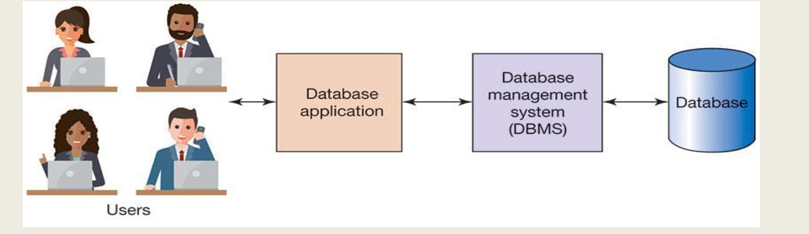

An Overview of Database
database

The Importance of DBs Today
- Depend upon
database:Internet,Web 2.0,IOT
Why and How Databases are Used?
- The purpose of a database is to
keep track of thing - db store information that is more complicated than a simple spread sheet
Problems with Lists (spread sheet)
Redundancy

Multiple Themes
- 그 결과로, list에 나타날 때만 존재하는 informartion이 생김
List Modification Issues

deletion problems, update problems, insertion problemsRelational Databases
Relationa Modelis methodology used as a solution for database design- A
relational databasestores information in tables- Each
informational topicis stored in its own table
- Each
Each themein the list can be stored in a table
Table = file = relation
column = fields = attribute
row = record = tuple
SQL (Structured Query Language)
- international standard for
creating,processing,queryingdatabases and their tables - db applications use SQL to
retrieve, format, report,insert,delete,modifydata for users - can combine table by
joinoperation
SELECT CUSTOMER.CustomerLastName,
CUSTOMER.CustomerFirstName,
CUSTOMER.Phone,
COURSE.CourseDate,
ENROLLMENT.AmountPaid,
COURSE.Course,
COURSE.Fee
FROM CUSTOMER, ENROLLMENT, COURSE
WHERE CUSTOMER.CustomerNumber = ENROLLMENT.CustomerNumber -- join condition
AND COURSE.CourseNumber = ENROLLMENT.CourseNumber; -- join conditionDatabase System (DBS)

User: Employ database application tokeep track of things
Use forms toread,enter,querydata
produce reportsDatabase Application:web/mobile database applications,Forms,ReportsDBMS: used tocreate,process,administerthe databaseDatabase:self-describingcollection ofrelatedtables
user data,metadata,indexand otheroverhead data,application metadata(form, reports) are stored in db
metadata= about the structure of the database. <-> user data
Function of DBMS
DB administration- Control concurrency
- Provide security
- Perform backup and recovery
Referential Integrity Constraints
Personal vs Enterprise-class Database Systems
- Personal: Access
Enterprise-class(Organizational): Microsoft SQL server
NoSQL databases
- NoSQL database =
non-relationaldatabase
Cloud databases
Main frame -> Client/server -> Cloud